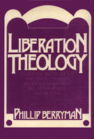

How does the church function in Latin America on an everyday, practical, and political level?
How does the church function in Latin America on an everyday, practical, and political level?


 How does the church function in Latin America on an everyday, practical, and political level?
How does the church function in Latin America on an everyday, practical, and political level?

|  |
Liberation TheologyEssential Facts about the Revolutionary Religious Movement in Latin America and BeyondPhillip Berrymancloth EAN: 978-0-87722-479-2 (ISBN: 0-87722-479-X) |
"[A]n introduction that competently places liberation theology in its cultural and religious context, [and] elucidates its roots in the Bible and in Catholic theology."
—The Washington Post Book World
In the chaos that is Latin American politics, what role does the Catholic church play with regard to its clergy and its members? How does the church function in Latin America on an everyday, practical level? And how successful has the church been intervening in political matters despite the fact that Latin American countries are essentially Catholic nations? Philip Berryman addresses these timely and challenging issues in this comprehensive.
Unlike journalistic accounts, which all too frequently portray liberation theology as an exotic brew of Marxism and Christianity or as a movement of rebel priests bent on challenging church authority, this book aims to get beyond these clich�s, to explain exactly what liberation theology is, how it arose, how it works in practice, and its implications. The book also examines how liberation theology functions at the village or barrio level, the political impact of liberation theology, and the major objections to it posed by critics, concluding with a tentative assessment of the future of liberation theology.
"Liberation Theology is just the book I've been searching for—unsuccessfully until now—as the basic text for the course I offer on Latin American Liberation Theology. It is everything I need. Concise, well-written, and balanced, it gives some real attention to the critics of Liberation Theology, as any fair text must do."
—Harvey Cox, Harvard Divinity School
"...a very clear, reliable, and readable introduction to and survey of liberation theology. It is also an introduction to the literature on the subject interwoven with history...[and] Berryman is a very trustworthy interpreter."
—Dr. Larry Rasmussen, Union Theological Seminary
"The book answers the charge that Liberation Theology is essentially Marxist by indicating to the reader that the use of Marxism is something minor in comparison to a Biblical reading and interpretation in the light of contemporary social and political realities.... It advocates the use of theologies of liberation and is addressed to an American audience."
—Monsignor Joseph W. Devlin, Department of Religion, LaSalle University
"... adds significantly to the documenting and appraisal of a theological movement of lasting importance."
—John Raines, Department of Religion, Temple University
Phillip Berryman was a pastoral worker in a barrio in Panama during 1965-73. From 1976 to 1980, he served as a representative for the American Friends Service Committee in Central America. In 1980, he returned from Guatemala to the United States and now lives in Philadelphia.
Religion
Latin American/Caribbean Studies
Political Science and Public Policy
© 2015 Temple University. All Rights Reserved. This page: http://www.temple.edu/tempress/titles/517_reg.html.